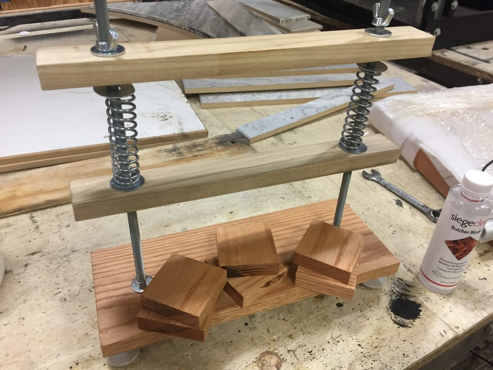
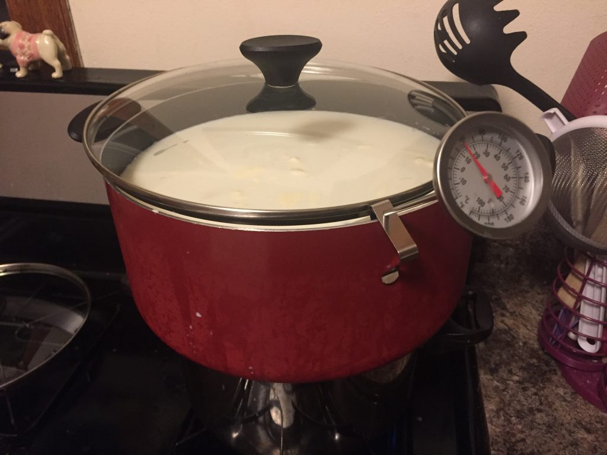
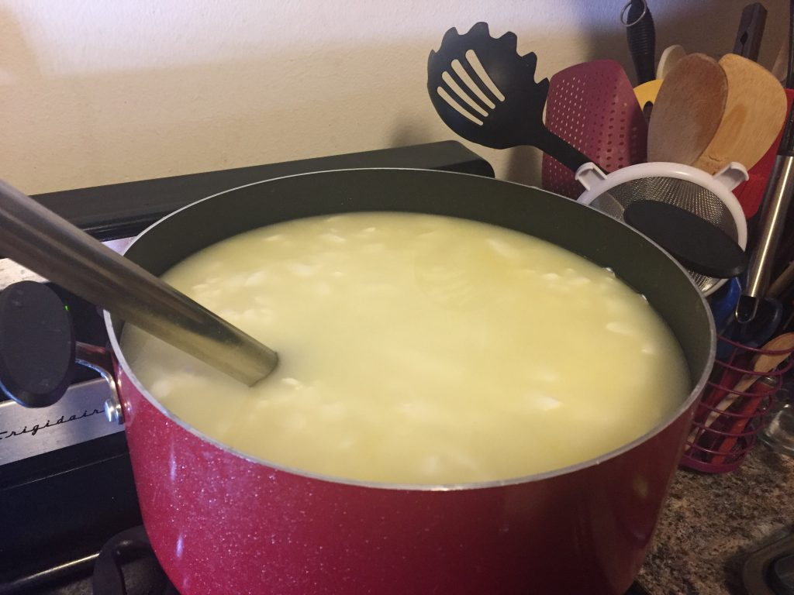
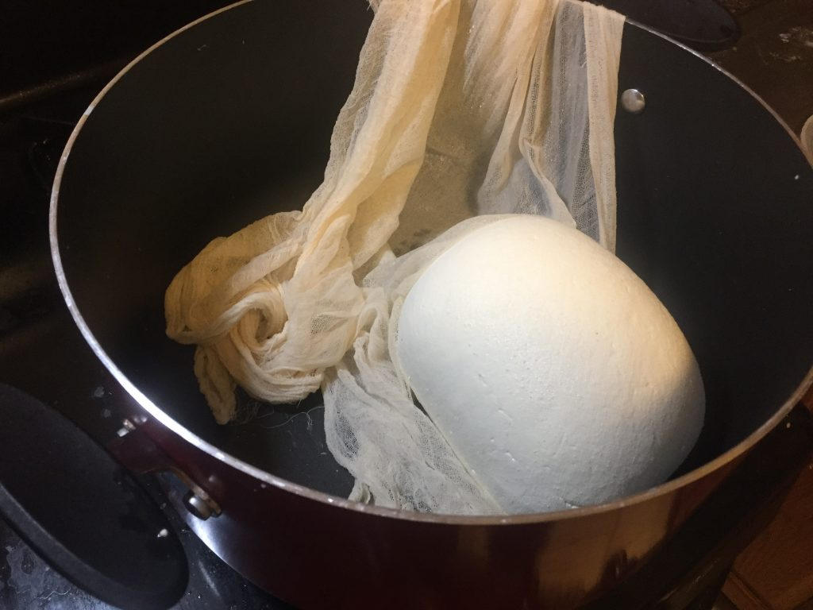
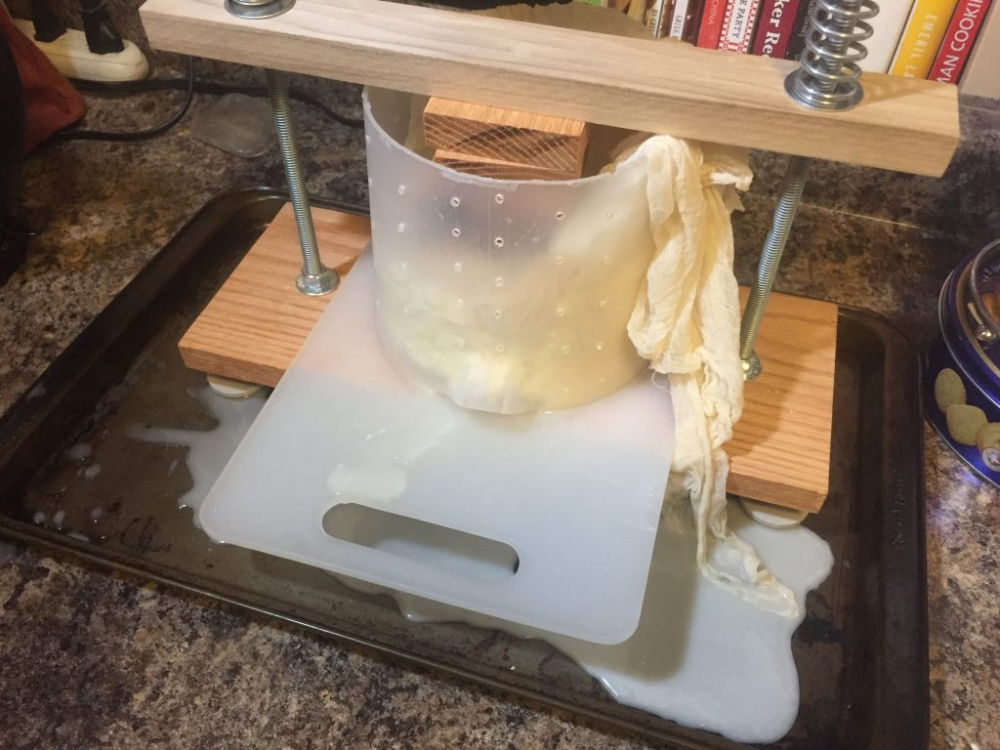
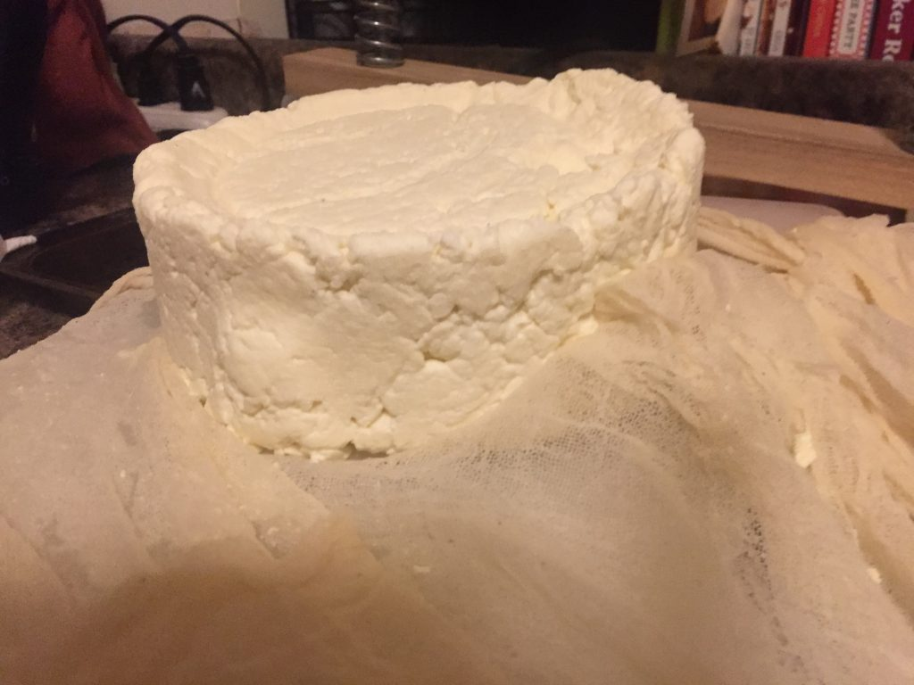
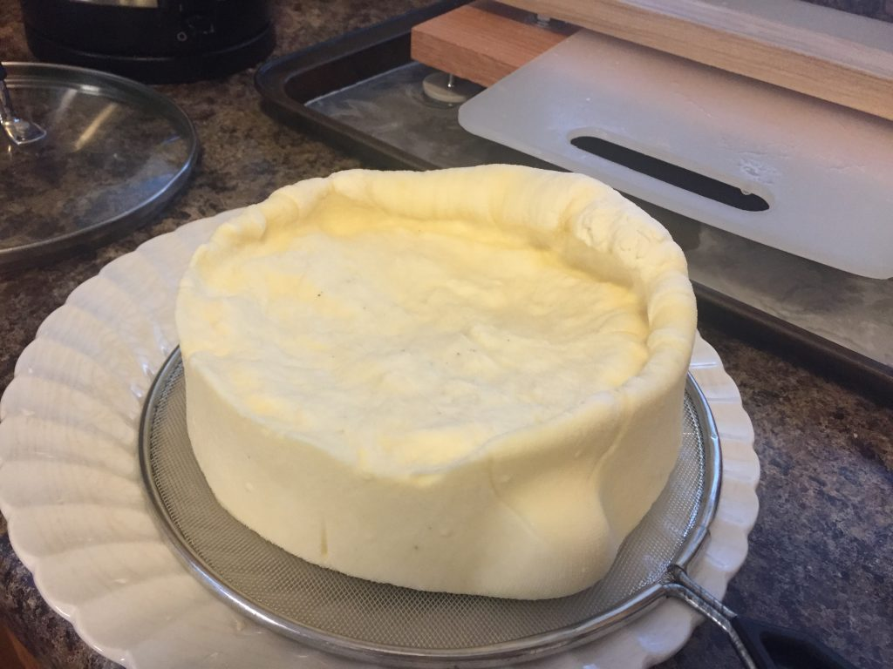
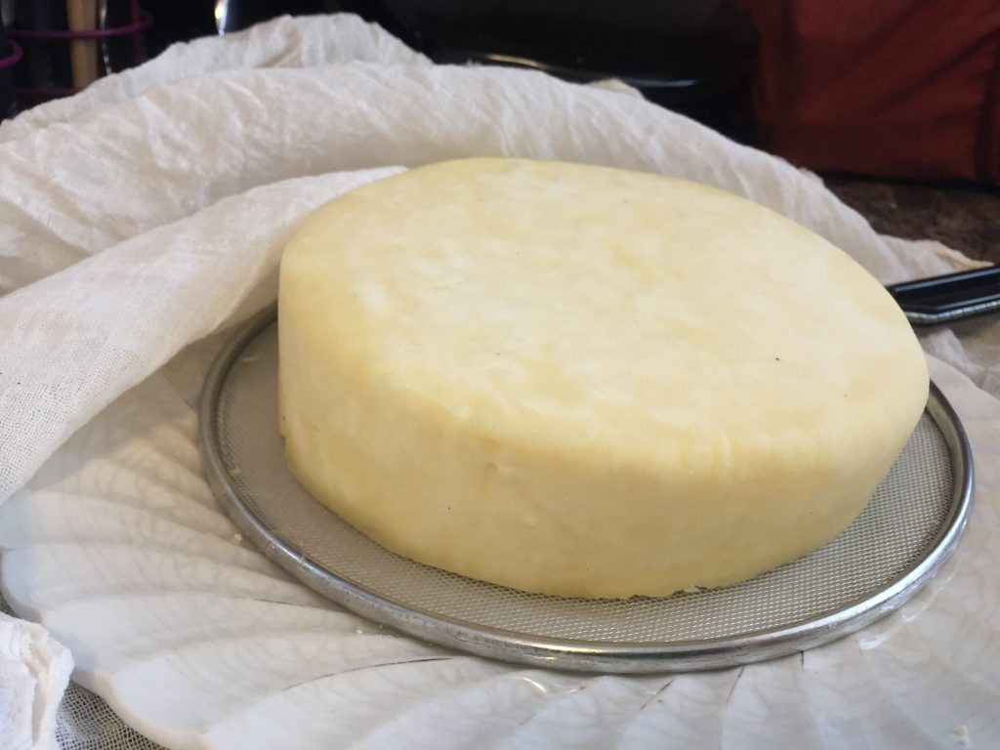
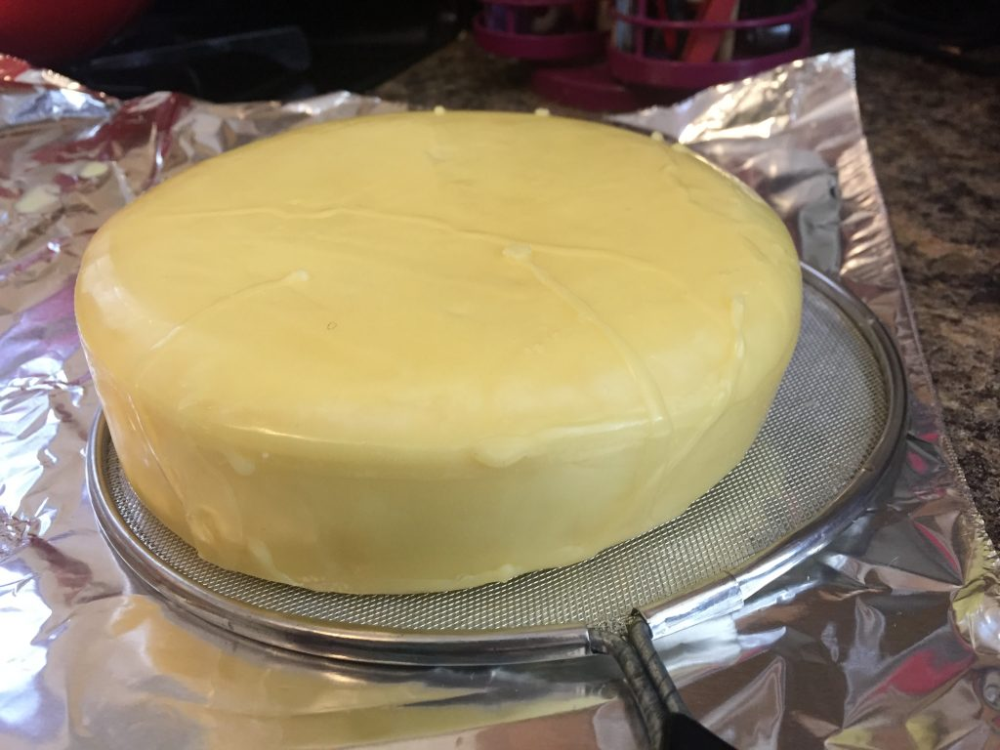

Over the past 12 months or so, I've dipped my toes into some basic cheesemaking, including cream cheese, farmer's cheese, and ricotta. But for me, there's no better cheese than a sharp white cheddar, and with an eye toward making cheddar and some other hard cheeses, I've built my own cheese press and my own first hard cheese.
The process I used to construct the press is very similar to this instructable. I used a 1x6x48" Maple board from Menards as the base, and two pieces of 1x2 Poplar from an earlier project. The threaded rod, nuts, wingnuts, and washers are all 3/8" hardware. I added four threaded furniture feet to raise the press off the countertop and allow for tilting the press slightly to allow the whey to run off. I used some butcher-block conditioner to help seal the wood before use. (Having access to a theatrical scene shop helps.)

My first pressed cheese is a "farmhouse cheddar", made according to this recipe from Gavin Weber. Specifically, the ingredients I used were:
- 2 Gallons (4 half-gallon containers) of Kalona Whole Milk from our Fresh Thyme Market. While unpasteurized milk seems to be recommended for a lot of artisinal cheese making, that's hard to come by in urban Chicago, so this non-homogenized milk is the way I've gone.
- 1 Sachet of Mesophillic Culture, purchased from Pursuit Supply Co, a small business here in Chicago that focuses on homebrewing and distilling, cheesemaking, and film development.
- 1/2 tsp of Liquid Vegetable Rennet, also from Pursuit Supply
- This was diluted in 1/4 cup of bottled (unchlorinated) water before adding, since apparently chlorine kills the coagulating action of the rennet
- 1/2 tsp of Calcium Chloride (from, where else, Pursuit), also mixed with 1/4 cup bottled water. I understand this introduces more soluble calcium to the mixture and helps the curds to form.
- 2 generous tbsp of non-iodized sea salt.
The process, as outlined by Gavin (of Little Green Workshops) is straightforward. Here is is summarized by me, with comments as to how my own process went:
Sterilize all materials that will come into contact with the milk or cheese.
- I used a preparation of Star-San mixed with water in the recommended ratio of 1:640 (1 Oz per 5 gallons). I soaked the large stirring spoon I planned to use, as well as all the measuring cups in this for a few minutes. Meanwhile, I boiled a couple quarts of water in my large stockpot to sterilize the pot itself, then wiped the lid down with the Star-San mixture.
To a large stockpot set up as a double-boiler, add the 2 gallons (8 liters) of milk.
- I used one of my large general-purpose pots underneath my stockpot as a double boiler, and it was remarkably stable.
Heat the milk to 33C (92F)
- This took about 20 minutes with my double boiler setup:
Stir in the diluted calcium chloride
Sprinkle the starter culture over the top, then stir for 1-2 minutes to incorporate
- Gavin's recipe calls for 1/8 tsp of culture, I simply used one small sachet.
Cover, and allow the milk to ripen for 45 minutes
- This allows the culture to start to grow a little and the milk to begin to acidify
- I turned off the heat at this stage to allow things to maintain their temperature, but when I returned after 45 minutes, the temperature had shot up over 40C! Oops!
Stir in the diluted rennet while stirring. Stir for no more than a minute as the milk with start to set.
- I treated myself to a very large metal spoon for this project
Check for a clean break with a clean finger
- Basically, stick a finger in through the top layer of curd - if it feels firm-ish, it's good to go. If it's a little soft and yogurt-y, you can cover and wait another 10 minutes or so.
Cut the Curd
- There are some fancy curd cutters out there that look like a wire mandolin or harp, but I just used a long clean knife, run through up-down, left-right, and twice angled.
Slowly heat the milk and curds to 38C (100F) over about half an hour
- Even with a double boiler setup, my setup took a little modulation (higher heat, lower heat, higher heat) to not spike in temperature too fast. I took about 25 minutes to raise the temp up to 38C, sitrring continuously

Let the curds rest for 10 minutes at 38C
- At this point, I should have taken the pot off the double boiler, but I figured it would help keep the milk warm. It sure did - by the time I returned 20 minutes later, the temp was up to 44C! It remains to be seen whether this will have a negative effect on the cheese.
Drain the pot into a clean cheesecloth-lined colander
- I collected the Whey at this point and made a Whey Ricotta out of it. Yum!
Tie up the edges of the cheesecloth and hang for an hour to drain some of the whey out
- I had a spare bit of PVC pipe leftover from my multiband antenna project, so I set that between the backs of two chairs and set the pot underneath to catch the drippings.

After an hour's dripping, transfer the curds back into a pot. Break the cheese mass into walnut-sized pieces. Toss 2+ TBSP of non-iodized salt throughout.
- I used non-iodized sea-salt, instead of some of the products which are marketed as "cheese salt." Not sure what the difference is
Line a sanitized cheese mold with a sanitized cheese cloth. Transfer the curds to the press. Flip a corner of cheese cloth over the top of the curds, and place the follower on top.
- I originally tried 3D printing a mold, but I got cold feet about subjecting a 3D print to 50+ lbs of pressure overnight, fearing it would crack. I also thought it would be good to seal the PLA with polyurathane or similar before trusting it to be food-safe. So I made a simple press out of a plastic jug from Walmart with the bottom and handle cut off, and holes punched through the sides.
Press for 10 minutes at ~10 lbs.
- I set up my press in a low-sides baking sheet to catch the whey as it ran off, and used the threaded-feet to set the press slightly off plumb so the whey all ran off one side.
- 
Remove the curds from the press and cloth, turn over, and press 10 minutes at ~25 lbs.
- Quite a lot of whey running off at this point. Fairly cloudy, which I read is not good, but I'm not sure why...

Remove the curds from the press and cloth, turn over, and press for 12 hours at ~50 lbs
- I left the cheese to press overnight, checking it once a couple hours and tightening the springs a bit.
Remove the wheel of cheese from the press and cloth. Trim any bits of cheese that have popped up around the follower.
- Leave these in the fridge for a couple days and they're basically cheese curds! So tasty!

Place the cheese on the counter under a bit of cheesecloth or similar to air-dry. Turn twice daily until it has a nice rind and is quite dry to the touch.
- I left my cheese on the counter for a little under 3 days before waxing. Possibly I should have left it longer to develop a drier rind, but we shall see when we break the thing open.

Wax or vacuum seal the cheese
- After drying for a couple days, the options are to either cloth-band, wax, or vacuum seal the cheese to prevent any nasty bugs getting into the cheese.
- One of Gavin's most popular videos describes Cloth-Banding the cheese, but in his final tasting of that cheese, he describes the process as too fiddly (and he did get some mold in a bit of that cheese early on). So I decided to wax the cheese instead. Pursuit was sadly out of cheese wax (soft parafin-based wax) when I stopped by, so I ordered some Beeswax from the internet to arrive the next day.

Age the cheese for 1 month to... forever?
- Currently, the cheddar is aging in a small mini-fridge in the basement, though with it being the early months of winter, the fridge is turned off and is just functioning as an airtight box. I added a small dish of water and a small dish of saturated salt to raise the relative humidity to around 80-85%.
So... now we wait! I'm thinking, with this being a first cheese, we'll crack it open around valentine's day (~3 months) to see how I did, then possibly re-seal it and age longer if it seems like everything's going well.
One next step will be to measure the pressure that my chosen springs will create when the press is tightened down entirely. I discovered that my bathroom scale doesn't fit within the scale, so much like the instruct able suggests, I'm putting together a test jig with a wider base to allow me fit the springs around the scale and make a weight gauge. I'll also need to replace the felt-bottomed feet with something that doesn't absorb whey (I threw the feet out after this batch).
Here's hoping it all turns out well!